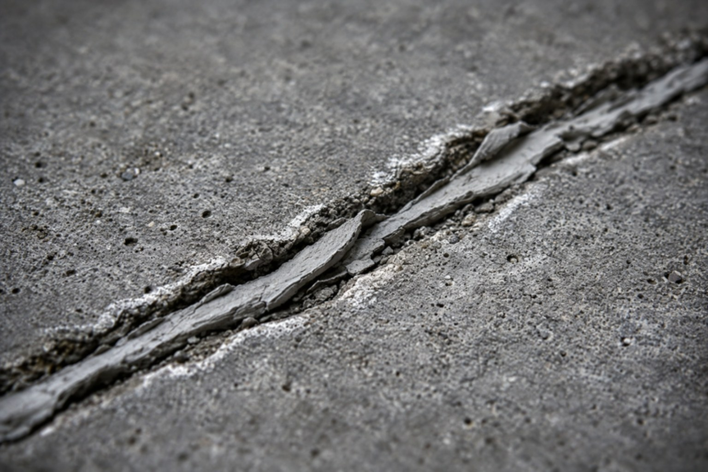
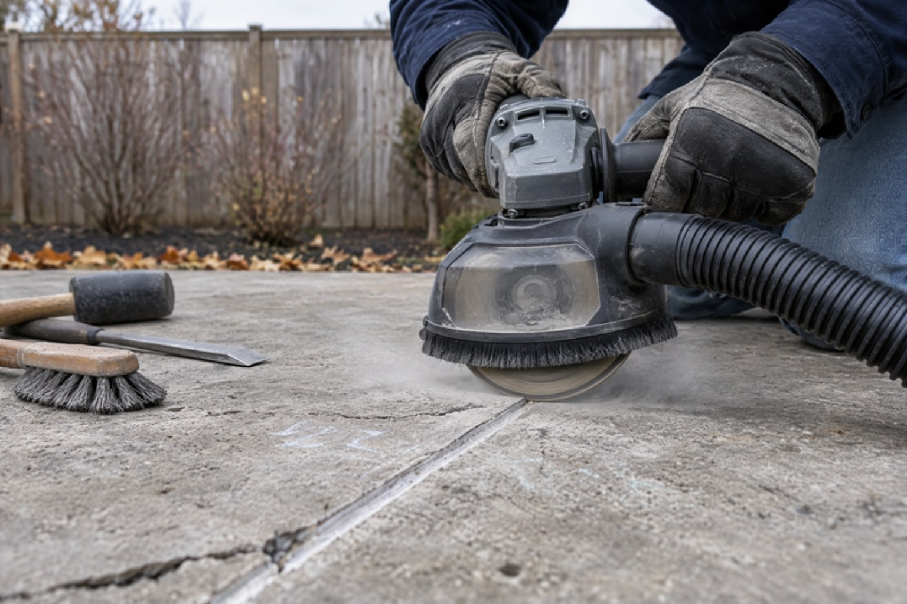
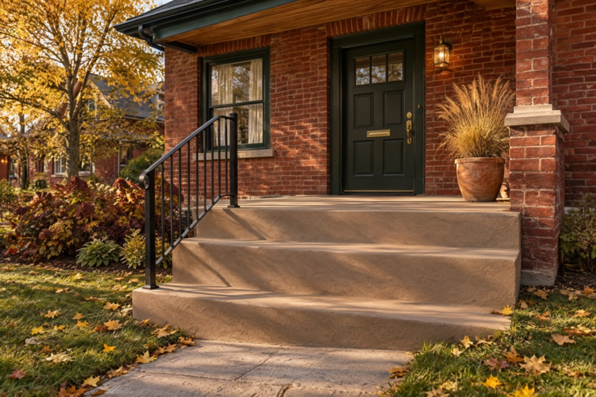

A crack in concrete is a symptom, and it is also a door. Once it is open, every rain and thaw sends water into it. In the GTA that water freezes dozens of times between November and March, expanding about 9% each time, and each cycle pries the crack wider and loosens the concrete on either side. By spring the hairline has edges you can catch a fingernail on. By the following spring it is spalling.
So the question is never “can I fill this?” You can fill anything. The question is whether the repair keeps water out through the winter and moves with the slab instead of fighting it. Most of what gets sold as crack repair in Toronto fails that test. This is how we sort the fixes from the cover-ups at Artisan Coat, after 20+ years of being the second contractor on the job.
First, Read the Crack
The right repair depends on three things you can check in two minutes: how wide the crack is, whether both sides are at the same height, and whether it is still moving.
- Hairline, under about 1/8 inch, both sides level. Shrinkage from the original cure or minor freeze-thaw stress. Not structural. Seal it against water, then overlay it and forget it.
- 1/8 to 1/4 inch, level, with crumbling edges. Water has been working in this crack for years. The edges need rebuilding, not just the gap.
- Any width, one side higher than the other. A “step” across the crack means the base has settled or heaved. No filler, epoxy or overlay fixes a base problem.
- A crack that keeps growing. Mark the ends with a pencil and date it. If it is longer in a month, something is still moving: tree roots, a washed-out base, a downspout dumping beside the slab. Fix the cause, then the crack.
Our guide to spotting concrete damage before it gets worse walks through every symptom. In short: width tells you the material, height difference tells you whether the problem is under the slab, and movement tells you whether to repair yet at all.
What Hides a Crack (and Fails by Spring)
A tube of crack filler pressed into a dirty crack
The repair you see on half the driveways in Scarborough and Etobicoke: latex or acrylic filler squeezed into the crack as-is and smoothed with a finger. The crack walls are covered in dust, old sealer and loose cement, so the filler bonds to debris, not concrete. It shrinks as it cures, pulls away from one side, and water runs down behind it. Now the crack is wet and covered, which is worse than wet and open, because you cannot see it growing.
Mortar or patching cement troweled over the top
Rigid cement over a crack is a guaranteed re-crack. Concrete moves with temperature, a swing of 60°C or more across a Toronto year, and a rigid skim coat cannot move with it. The crack telegraphs straight through the patch within the first winter, usually with the patch flaking off around it.
A coating or paint over an unprepared crack
Driveway coatings and porch paints advertise “fills hairline cracks.” They fill the top of the crack and leave the rest open; the film bridges the gap until the first frost, then splits along the same line. The fix starts with stripping the coating, which is why we wrote a whole case study on it.

A crack repair that does not start with a grinder is a crack repair that starts over next year. The preparation is the repair. The material is just what you put in the hole.
What Actually Fixes a Cracked Slab
1. Rout and seal with flexible polyurethane
The workhorse repair for hairline and narrow cracks on driveways, walkways, patios and garage floors. The crack is chased with a diamond blade into a clean groove, typically 1/4 inch wide and deep, so the sealant has fresh concrete to bond to. The groove is vacuumed out, a backer rod goes in on deeper cracks, and a self-levelling polyurethane sealant fills it flush. Polyurethane stays flexible well below freezing, so when the slab moves the joint stretches instead of tearing. Done right, this lasts 7–10 years in GTA conditions.

2. Structural epoxy injection or epoxy stitching
For a crack that goes through the slab but is stable, with no height difference and no ongoing movement, a two-part structural epoxy welds the two halves back together, gravity-fed or injected through ports, or with steel stitching pins set in epoxy across the crack on steps and thicker sections. Epoxy is rigid, which is the point: it restores the slab to one piece. It is the wrong choice for a crack that is still moving, where it will simply crack again beside the repair.
3. Rebuild spalled edges with polymer-modified mortar
Where years of water and salt have crumbled the edges of a crack, a step nosing or a slab corner, the loose material is cut back to sound concrete, the edge is formed, and a polymer-modified repair mortar is placed over a bonding agent. The polymer gives the mortar the flexibility and adhesion plain cement lacks, so the repair moves with the slab. It is the same system we use for step repairs across the GTA, and the step most crews skip because it is slow.
4. Lift the slab, or re-pour the section
If one side of the crack is higher than the other, the slab has lost its base and the honest repair is under it, not on it. A slab that has settled an inch and is otherwise sound can be lifted with polyurethane foam injection by a slab-lifting specialist, then routed and sealed. One that has dropped further, broken up or heaved against the house is a re-pour. We pour new concrete ourselves now, so you get one answer; our guide to pouring new versus resurfacing has the 60-second test we use on site.
5. Repair, then overlay the whole surface
Repairs one through three look like repairs, which is fine on a garage floor and not on a front porch. Once the cracks are routed, sealed and the edges rebuilt, a Jewelstone overlay bonds over the entire surface in a stone, slate or broom texture and the repair disappears into it. No demolition, two to three days, frost-resistant and sealed against salt. Our post on resurfacing over cracked concrete covers which cracks can be overlaid and which cannot.
The most common mistake we see is a rigid repair on a moving crack. If a crack reopened after being filled, it is a moving crack, full stop. It needs a flexible sealant in a routed groove, or the cause of the movement fixed first. A harder material the second time does not make it hold; it makes it crack somewhere new.
Concrete Crack Repair Cost in Toronto (2026)
Crack repair in the GTA is priced by the linear foot for sealing and injection, by the area for edge rebuilding, and by the project once an overlay is involved. Minimums apply because a crew with a grinder, vacuum and materials costs the same to mobilise for a 10-foot crack as a 40-foot one. Typical 2026 ranges for Toronto, Mississauga, Brampton, Vaughan and Oakville:
| Repair | Typical GTA Cost (2026) | Holds Up? |
|---|---|---|
| Hardware-store crack filler, DIY | $15 – $40 per tube | 1–2 seasons; hides the crack |
| Rout and seal, polyurethane | $8 – $15 per linear ft | 7–10 years; $400–$700 minimum visit |
| Structural epoxy injection or stitching | $20 – $40 per linear ft | Permanent on a stable crack |
| Spalled edge or step nosing rebuild | $250 – $600 per area | 10+ years with polymer mortar |
| Crack repair + overlay, steps | $1,800 – $3,500 | Repair disappears; sealed finish |
| Crack repair + overlay, porch | $2,500 – $6,000 | 40–60% below replacement |
| Slab lifting, settled section | $1,500 – $4,000 | Specialist trade; then seal the crack |
| Re-pour, broom finish, per sq ft | $12 – $20 | When the base has failed |
The pattern in that table is the whole argument. A routed and sealed crack costs a few hundred dollars and keeps water out for most of a decade. Left open or hidden under filler, the same crack becomes a spalled edge rebuild, then a full driveway resurfacing, and if the base goes, a re-pour. Every rung up that ladder costs five to ten times the one before. For the resurfacing numbers, see our 2026 resurfacing cost guide.

Cracked Driveway Repair in the GTA: Before Winter or After?
Mid-November is not too late to seal a crack. Polyurethane sealants go in during dry weather down to about 5°C, and a sealed crack going into winter is in far better shape than an open one. What November is too late for, most years, is the overlay, which needs warmer, drier conditions to cure. The realistic plan for a crack found this month is two visits: seal it now, resurface in spring.
- Seal open cracks now, especially on driveways and walkways that will see salt. Salt brine is the worst thing that can sit in a crack over winter.
- Fix the drainage. A downspout or a sloped lawn feeding water onto the slab is usually why the crack is there. Extending the downspout is half the fix.
- Use sand, not salt, on a cracked slab this winter. De-icing salt pulls water into damaged concrete and speeds up spalling along the crack edges.
- Book the spring overlay now. April and May dates in Toronto fill through the winter. A sealed crack holds until then; a slot does not.
Foundation wall cracks are a different animal, usually injected from inside; the exterior coating has its own failure modes, covered in our post on parging repair before winter. For the maintenance side, see our guide to protecting concrete from freeze-thaw.
Ask how they will prepare the crack, what material they will use and why, and what happens if it moves. A real answer names a grinder, a flexible sealant for a moving crack and an epoxy for a stable one, and comes with a written warranty. “We fill it and coat over it” is the answer that costs you twice.
Where We Work
Artisan Coat repairs, seals and resurfaces cracked concrete driveways, walkways, porches, steps, patios and garage floors across Toronto, Mississauga, Brampton, Vaughan, Oakville, Etobicoke, North York, Scarborough, Richmond Hill, Markham, Burlington, Milton, Caledon, Hamilton and the wider GTA. One crew handles diagnosis, repair, overlay and sealer, with a written warranty on every job. Full list on our services page.
The Short Version
Filler pressed into a dirty crack, cement troweled over it and paint rolled across it all hide the crack and fail by spring. Repairs that hold open the crack to clean concrete, then match the material to it: flexible polyurethane in a routed groove for cracks that move, structural epoxy for stable ones, polymer-modified mortar for crumbling edges, and a lift or re-pour when one side sits higher than the other. In Toronto in 2026, routing and sealing runs $8–$15 per linear foot, epoxy injection $20–$40, and crack repair with a full decorative overlay $1,800–$3,500 for steps or $2,500–$6,000 for a porch.
Seal what is open before the ground freezes, keep the salt off it, fix whatever is feeding it water, and plan the overlay for spring. A crack caught this November is a few hundred dollars. The same crack caught two Novembers from now is a new slab.